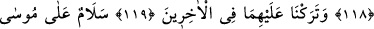

MÛSÂ VE HÂRÛN’A
SELÂM OLSUN
114. Andolsun biz Mûsâ’ya da Hârûn’a da nimetler verdik.
115. Onları ve kavimlerini o büyük sıkıntıdan kurtardık.
116. Kendilerine yardım ettik de galip gelen onlar oldu.
117. Her ikisine de apaçık anlaşılan bir kitabı (Tevrat’ı) verdik.
118. Her ikisini de doğru yola ilettik.
119, 120. Sonra gelenler içinde, Mûsâ ve Hârûn’a selâm olsun, diye (iyi bir nam)
bıraktık.
121. Doğrusu biz, iyileri böylece mükâfatlandırırız.
122. Şüphesiz, ikisi de mü’min kullarımızdandı.
“Andolsun biz Mûsâ’ya da” kardeşi “Hârûn’a da” nübüvvet ve diğer dini ve
dünyevi “nimetler verdik.”
Allah Teâlâ’nın sıfatı olan “__WORD__ (el-Mennân), hiç bir karşılık beklemeden veren
demektir. Kişi birine bir şey verince “__WORD__ denilir. Bir de kişi yaptığı iyiliklerini
sayıp dökerek minnet ve imtinan ile başa kakınca
“__WORD__ denilir. Bu minnet, insanlar tarafından yapılınca sevilmez ve hoş
karşılanmaz; ancak Hak Teâlâ tarafından yapılabilir. Nitekim Allah Teâlâ şöyle buyurur:
“Onlar İslâm’a girdikleri için seni minnet altına sokuyorlar. De ki:
Müslümanlığınızı benim başıma kakmayın. Eğer doğru kimselerseniz bilesiniz ki,
sizi imana erdirdiği için asıl Allah size lütufta bulunmuştur.” (el-Hucurât 49/17)